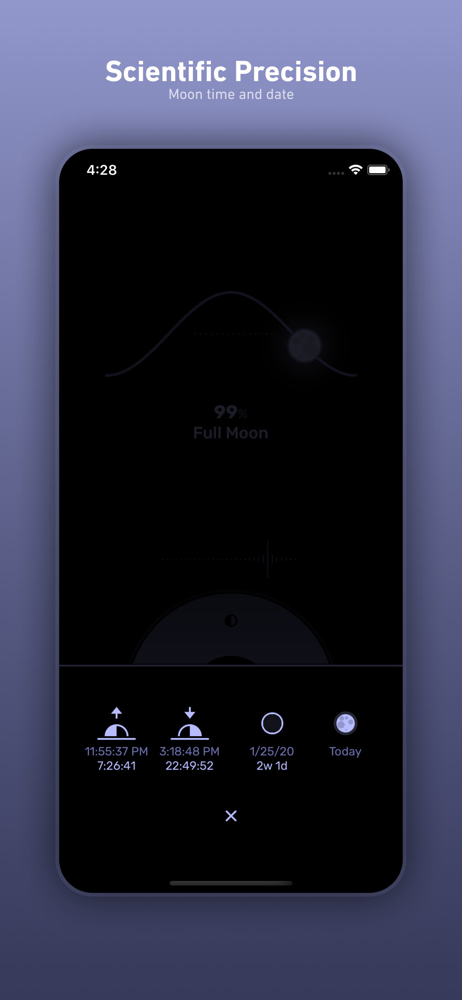
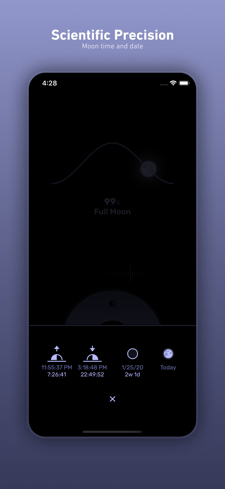
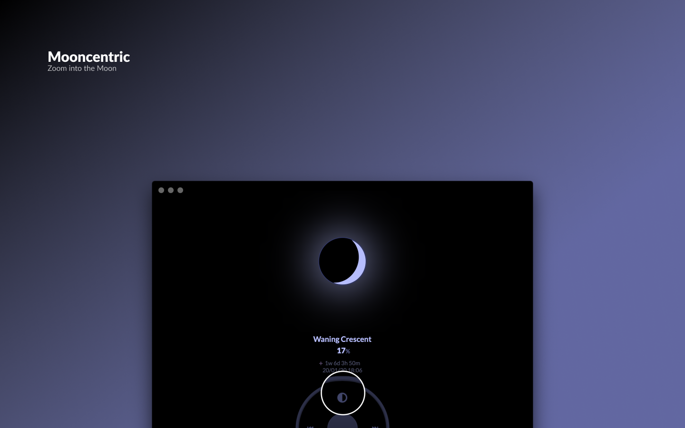

Moonraker
Press Download

iOS
macOS
 


Overview
The Dark Side of the Moon.
Follow the phases and movement of the moon with scientific precision.
Travel in Time
Dragging around the Moon Wheel and see how the Moon will look in the future or in the past, it is an infinite loop so you can go as far as you want.
Features
- Phases
- Moon position according to your location
- Altitude
- Azimuth
- Visibility
- Illumination
- Time and date for upcoming events
- Moon Rise
- Moon Set
- Full Moon
- New Moon
- Status bar menu to get fast and updated information
Moon Wheel
- Drag around to travel item
- Moon: zoom in or out
- Pause: go to the current real time
- Forwards: go 12 hours into the future
- Backwards: go 12 hours into the past
No internet required, the whole astronomical engine is inside the app.
Providing your location is optional, if you accept to do so our astronomical engine will increase it's precision, if you rather not you still will be able to get information of the moon.
Privacy
Moonraker does NOT track your activity in any way, not Analytics nor any other event or behaviour metrics. Whatever you do with this app is up to you and we don't want to know about it.
If you decide to allow Moonraker to get access to your location this will be used to enhance the precision of the astronomical engine but it won't be shared nor stored in any way.